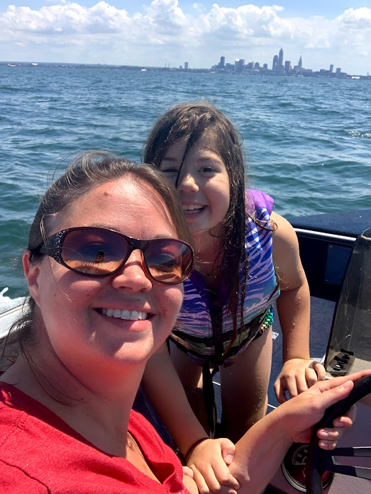

Anne, Gary, Grace, and Corny the Unicorn. October 2020.

CEO Anne Holton, with daughter Grace. Lake Erie with Cleveland skyline. August 2020.
Cleveland, Ohio. October 2020.
Holton Innovations is a family-owned company based in Cleveland, Ohio. Orbeas Rogue is their debut app, with a goal of inspiring users to discover the world around them in a way they have never seen before. Holton Innovations is also committed to providing a safe experience for users of all ages, ensuring content and advertising are always age-appropriate. If you have any questions, please email us at info@holtoninnovations.com.
CEO Anne Holton enjoyed taking her small fishing boat out on Lake Erie each summer. One day, the waters were too rough to stay on the lake, so she and her father, Gary, decided to take the boat up the Cuyahoga River. Power-boating through the Cleveland waterways, Anne used her smart phone to research old signs on buildings under construction along their route. She and Gary learned fun new facts about former Cleveland businesses, and the idea for Orbeas Rogue was born.
Anne, Gary, Grace, and Corny the Unicorn. October 2020.
CEO Anne Holton, with daughter Grace. Lake Erie with Cleveland skyline. August 2020.